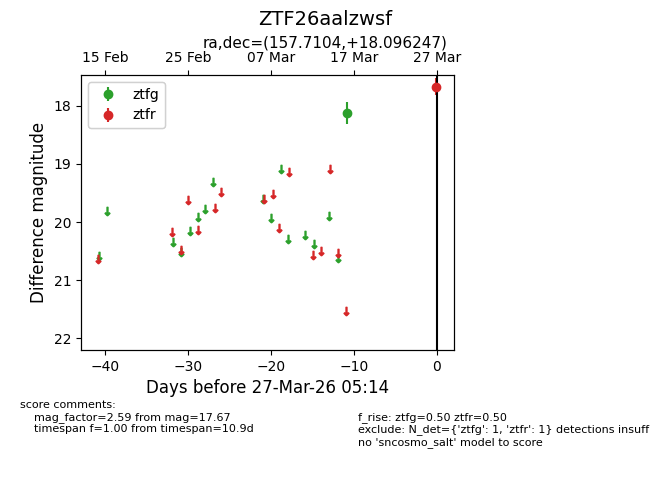
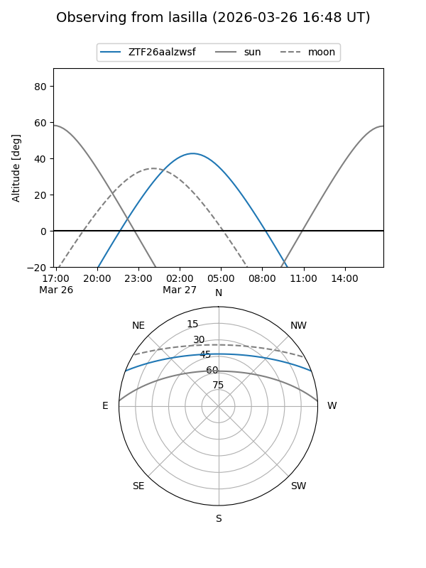
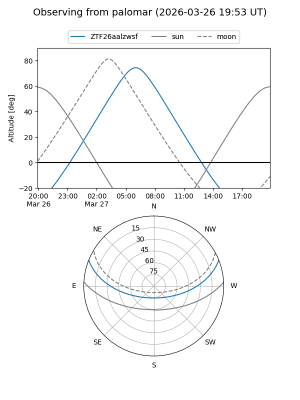

ZTF26aalzwsf
Target ZTF26aalzwsf at 2026-03-27 05:17
Aliases and brokers:
FINK: link
Lasair: link
ALeRCE: link
alt names
ZTF26aalzwsf (ztf,fink_ztf)
Coordinates:
equatorial (ra, dec) = 157.7104,+18.09625
equatorial (HMS+DMS) = 10:30:50.51,+18:05:46.49
galactic (l, b) = (221.0393,+56.44392)
Flags:
Photometry:
last ztfg=18.12, ztfr=17.67
1 ztfg, 1 ztfr detections
Lightcurve

Visibility


Additional plots